突発性難聴、急性低音型感音性難聴、メニエール病でお困りの方はTeaching Beauty鍼灸マッサージ整骨院へ。
電話でのご予約・お問い合わせは📞03-6413-7803
〒154-0014 東京都世田谷区新町3-21-1さくらウェルガーデン３F
突発性難聴Sudden Deafness
突発性難聴、メニエール病 、低音障害型感音難聴専門鍼灸院
【突発性難聴（SD）とは】
難聴を患う人は、日本では年間10万人います。
様々ある難聴の中でも「突発性難聴」は、年間3～4万人の方が発症しており、近年では浜崎あゆみさん、堂本剛さん、スガシカオさんなど有名人がこの病気に罹っているため、メディアでも取りあげられることが多くなっているので知っている方も多いと思います。
音楽家が多いので、突発性難聴は、大きな音を聞き過ぎで発症してしまうのではないかと考えてしまいがちですが、大きな音とは全く関係がないとされています。大きな音を聞きすぎて発症するのは老人性難聴です。これは耳の経年劣化です。
コンサートなどで大きな音を聞いた時に、耳がボワーンとしたりするのは耳の機能が一時的に低下した状態で、軽度の場合は2～3日間、しっかりと休息を取れば聴力は回復します。
この場合は「軽度の急性音響性感音性難聴（音響性外傷）」という病名になり突発性難聴とは全く関係がないのです。一時的に大きな音を聞いて全く聞こえなくなる音響性外傷もありますが、これは大きな音を聞いてすぐに発症します。大きな音を聞いたその場ですぐに耳が聞こえなくなっていないなら、その難聴は音響性外傷ではありません。
【原因】
突発性難聴はストレス、体調不良、疲労、寝不足などが背景にあるとされていることはわかっているのですが病気の原因はハッキリとわかっていません。
しかし、要因となっている『ストレス』や『疲労』、『睡眠不足』を排除することがとても重要ですが、現代社会ではなかなか難しいのが現状です。
ハッキリとした原因はわかっていないのですが、内耳の血流障害、ウイルス感染、自己免疫説などが考えられています。
しかし、現在の最新の研究では疲労やストレスで自律神経の交感神経が血管を収縮させてしまい、耳の中の血流を急激に悪化させ、内耳の血流障害になるとの説が有力となっております。
【聴力の伝わり方】
次に人間が耳で聞く時に体の中でどうなっているかを説明します。
人が音を聞く時の音の伝達は、まず耳で音を集めて、その音が外耳道を通って鼓膜を震わせます。例えると、太鼓を鳴らすと太鼓の皮の部分（鼓膜）が振動しているのと同じです。
鼓膜の奥にある中耳には人体最小の骨と呼ばれる耳小骨「ツチ骨、キヌタ骨、アブミ骨」の3つの骨があります。
鼓膜に伝わった振動がこの骨に届き、カサカサと骨が振動し更に振動を増強して内耳へと伝えます。
この振動が内耳にある蝸牛へと伝わり、蝸牛の中のリンパ液に波を起こし、その波の揺れが電気信号へと変わり聴神経を伝わって脳へと伝わり『音』として感じることができるのです。
この伝導のルートである内耳の中にある有毛細がダメージを受けると脳への電気信号が届かなくなってしまい、突発性難聴になってしまいます。

【内耳の血流障害による突発性難聴】
聴覚器官は、上記の図にみられるように外耳、中耳、内耳の３つの部分に分けられます。
このうち、耳の一番奥にある内耳を通る血管は1本しかありません。
その血管が収縮、けいれん、血栓などを起こしてしまうと血管が詰まってしまい、内耳の循環障害を起こして神経に血流がいかなくなってしまうために耳が聞こえなくなるのです。
これが突発性難聴を引き起こすと考えられています。
簡単に言うと、脳に起これば脳梗塞、心臓に起これば心筋梗塞、耳に起これば突発性難聴というようなイメージです。突発性難聴を発症した人が5年後に脳卒中になる確率は、突発性難聴を発症していない人より12.7％も高いとの報告があるように、血液循環との関係が深いとされています。
このタイプでは高血圧、糖尿病、心臓病、喫煙歴、睡眠時無呼吸症候群などがある方に多くみられる傾向があります。
このような方は血管壁が動脈硬化を起こしているため、内耳の血流障害になりやすいのだと考えられています。
また、近年の研究では突発性難聴を発症した人は、脳卒中を発症しやすいというデータもあります。つまり、突発性難聴を発症した人は何らかの影響で動脈にダメージを受けているということです。
【ウイルス感染による突発性難聴】
ウイルス感染性の難聴では、麻疹ウイルス・風疹ウイルス・水痘ウイルス・サイトメガロウイルス・インフルエンザウイルス、新型ウイルスなどが、難聴を起こす可能性のあるウイルスとして有名です。
ウイルス感染が内耳に影響を及ぼし、炎症や血流障害を引き起こすことで、聴力低下が生じると考えられています。
また、直接、聴神経内にウイルスが入り込み突発性難聴が起こっているのではないかとも考えられています。
しかし、ハッキリとした原因は分かっていないのが現状です。
おたふく風邪の原因となるムンプスウイルスによる難聴はムンプス難聴と呼ばれ、突発性難聴とは区別されていますが、同様に突然、耳が聞こえなくなります。
しかし、耳の下にある耳下腺が腫れたり、痛みが出るのが特徴なので見分けはつくでしょう。
このように、血流障害説やウイルス感染説が考えられているのですが、当院としては血液循環説が濃厚と考えております。
しかし、やはり風邪や上記のウイルス感染などを罹患してから突発性難聴を発症したという
患者様も少なからずいるため、ウイルス説というのが消えないのだと思います。
実際に当院にも、そのような患者さんが見受けられます。
血液循環説にしろ、ウイルス説にしろ、ストレスなどの精神的疲労や肉体的疲労が発症の引き金になるということはハッキリとわかっています。
ですから、突発性難聴を発症してしまったのなら、現状のストレスを取り除くことが先決です。 そして、ストレスの根幹が取り除かれない状態だと、聴力の回復スピードに影響を与えてしまいます。
【発症しやすい人】
突発性難聴を発症しやすい人は、普段から真面目な方が多いと言われています。
特に、人に相談できず自分で抱え込む方、完璧主義の方、自分を犠牲にしても目標達成のためならいくらでも頑張ってしまう方に多く、このような方は一見ストレスに強そうなのですが、実はストレスに弱いタイプとされています。
プレッシャーやストレスがかかると、自律神経（交感神経）が作動し血液の流れが悪くなります。
交感神経は血管を収縮させるため、末端の細い血管への血流が阻害されてしまいます。
そのため、全身の血流を悪化させ、より細い毛細血管の流れを遮断してしまうため、突発性難聴を発症してしまうとされています。
当院では、突発難聴の施術の際に自律神経の調節を行うため、耳の施術をしているのに、冷え性が治った、体温が高くなった、原因不明と言われている高血圧が治った、胃が痛くならなくなった、便秘や下痢が改善された、片頭痛が治ったなど様々な体の変化を体験できると思います。
また、末端冷え性の方を例にあげると、交感神経に乱れが出てしまって毛細血管への流れが遮断されて冷えが出ているのです。この場合、鍼灸施術による交感神経への自律神経調節を行うと冷え性が治ってきます。つまり、交感神経が緊張状態だと全身の血流を悪化させ『冷え性』にもなってしまうのです。
この自律神経の乱れが突発性難聴の発症要因になってしまうのです。
ですので、自律神経の調節を行いたい方や、難聴を予防したい方もご相談ください。
ここで、今一度、いかにストレスが体に悪いかを良く考えてみて下さい。
当院でも多くの患者様が突発性突発性難聴を機に転職をされました。
仕事は自分の人生を縮めるものではなく、人生をより良いものにするための物ですよね？
聴力をを失ってまで続けたい、やりたい仕事ですか？
仕事も、人付き合いも無理をしていると必ず体は壊れてしまいます。
改めて、今回を機に見つめ直す時間を作ってみてください。
【突発性難聴と間違われやすい疾患】
突発性難聴と似た症状を持つ病気に、次のような病気があります。
①内耳窓(正円窓)破裂症（外リンパ瘻）
内耳窓破裂症は、外リンパ瘻とも呼ばれます。
正円窓 (蝸牛窓)の 破裂などにより、外リンパ液が内耳から中耳などに漏れることで聴力や平衡器官に障害が起こります。
このタイプの難聴は突然発症し、日を追うごとに悪化し数日のうちに高度難聴になったり、全く聞こえなくなる失聴になったりします。特に強いめまいを伴う場合が多く、耳鳴りや嘔吐を伴う場合もあります。
この病気は、強くいきんだ時、海に深く潜った時（ダイビングなど）、鼻を強くかんだ時、事故などの外傷時、飛行機などの気圧がかかった時など、脳内の髄液の圧が一時的に高まった時に突然発症します。
このように、脳の髄液圧が高まるような事をした場合に、内耳の膜が破れてしまい発症します。また、ダイビングや飛行機内で耳抜きが上手くできないで発症する場合もあります。
外リンパ瘻の発症時に内耳窓が破れる『ポン、パチン』という音が聞こえる方もいます。
ポップ音に続いてザー、ジャーという水が流れる耳鳴りの音が聞こえる人もいます。
また、頭の位置によって症状が変わるのも特徴です。
外リンパ瘻も上記のような原因がなくストレスや疲労で発症するケースも近年多くなっております。
こちらの外リンパ瘻は発症後すぐに鍼灸施術を始めれば自然に穴が塞がりやすくなります。
外リンパ漏の診断はMRIやCTでの画像診断ができません。
確定診断には鼓室を切開して顕微鏡で外リンパ液が漏れているかをチェックする方法しかありません。（試験的鼓室開放術）
その際に、漏れが見つかれば側頭筋膜を利用した手術をして穴を塞ぎます。
確定診断には手術が必要なため、早期発見ができないため、基本的には手術ではなく薬物療法で様子をみる保存療法を主体とするため、鍼灸の適法範囲となります。

②メニエール病
メニエール病は、難聴、回転性めまい（目の前がぐるぐる回るめまい）、耳鳴りの３つが特徴的な症状です。
原因は内耳にある「内リンパ」の水腫（むくみ）だと言われています。
この病気は気候の変化（低気圧、台風などの前線の接近）などで気圧が急に下がった時に発症することが多いと言われています。
また、寝ても治まらない、めまいの症状が30分～数時間続いて、ひどい場合は吐き気、冷や汗なども1回だけではなく繰り返し起こるのが特徴です。
突発性難聴は一度発症すると基本的には再発が無いといわれています。
しかし、メニエール病では難聴、めまい共に再発を繰り返してしまうのが特徴です。
症状がよく似ているため、初回のメニエール病発症時は突発性難聴と誤診されてしまうこともよくあります。
③聴神経腫瘍
突発性難聴の場合、脳に異常がないかを調べるため、MRI検査やCT検査によって聴神経腫瘍、悪性腫瘍、脳動脈瘤がないかなどを調べます。
そのため、突発性難聴で「聴力がかなり低下している方」や「めまいがなかなか治まらない方」はMRI検査やCT検査をすることが多くなります。その結果、聴神経腫瘍が見つかりやすくなったのだと思われます。聴神経腫瘍は脳腫瘍の6％と症例が多く、突発性難聴の2.7～10.2％が聴神経腫瘍による難聴と言う報告もあります。
聴神経腫瘍は前庭神経（平衡感覚の神経）に発症する良性腫瘍で片側の耳に発症することが多いです。ほとんどの場合、1年で1～2ｍｍ程度とゆっくりと育ち、症状も軽度ですが、一気に大きくなって脳幹を圧迫した場合、手足の震えやふらつき、手足の運動麻痺や意識障害になり生命にかかわってしまうケースもあります。聴神経腫瘍の手術適応サイズはおよそ3ｃｍ以上とされてるため基本的には経過観察となります。
良性腫瘍により、聴神経を圧迫するために突発性難聴と同じ症状を呈してしまう場合があります。
聴力低下、めまいやふらつき、頑固な耳鳴りが主な症状になります。
腫瘍が大きくなると様々な脳神経を圧迫するため、様々な症状が出ます。
顔面神経麻痺、複視（物が二重に見える）、平衡感覚異常（まっすぐ歩けない）、嚥下障害（食べ物をうまく飲み込めない）、激しい頭痛、意識混濁、水頭症などの症状が出てくる場合があります。
聴神経腫瘍も腫瘍が小さい場合は経過観察となる場合が多いです。
そのため、難聴、めまい、耳鳴りなどの症状に対する鍼灸施術は適応となります。
聴力、めまい、耳鳴りは聴神経腫瘍で経過観察の場合は腫瘍のサイズも大きくないため、鍼灸療法が最善の方法となります。
ただし、鍼灸施術をして難聴、めまい、耳鳴りは治まったとしても聴神経腫瘍の腫瘍自体は小さくなりませんので病院での定期的な経過観察は必要となります。
突発性難聴の症状
 【主症状】
【主症状】① 突然の難聴
文字どおり即時的な難聴で突然発症します。
「目が覚めたら急に耳が聞こえなくなっていた」などではなく、
難聴が発症した時は “こんな作業をしていた”など自分がその時に何をしていたのか、発症の状況をハッキリと言えるのも特徴です。「何月何日何時ごろ、何をしていた時」とハッキリ言えるほど明確に覚えているほどです。
② 高度な感音難聴
必ずしも“高度”である必要はないが、実際問題としては高度でないと突然難聴になったことに気づかないことが多いと言われています。
そのため、難聴の度合いが高くないとハッキリとした状況を言えない場合もあり、難聴発症から時間が経ってしまう場合もあります。
③ 原因が不明
思い当たる原因がない、ストレスなんて感じていない。というタイプの方がいます。
このようなタイプの方は苦労を苦労と感じなく、典型的な頑張り屋さんです。
このタイプの方は治りにくい特徴があります。
突発性難聴はストレスとなっている原因を見つけ、それを取り除いた上で、鍼灸施術に臨むことが大変重要になってきます。
原因がわからない、思い当たらないという方は仕事やプライベートで忙しくせずに休養を取りましょう。
でないと、聴力が改善しにくいです。このようなタイプの方の場合は早急に当院にご連絡下さい。緊急での鍼灸施術が必要です。
【副症状】
① 耳鳴り
難聴の発症の前に耳鳴りがしてから突発性難聴になる場合と、突発性難聴を発症した後に耳鳴りを生ずるタイプの2パターンがあります。
その耳鳴りは人によって様々ですが、「キーン」と高い耳鳴りがする方と「ゴーッ」という低い音ががする方がいます。
そして、この耳鳴りが厄介で聴力は戻らなくてもいいから、耳鳴りだけでも止めて欲しいという程、耳鳴りは辛い症状なんです。
耳鳴りも鍼灸での対応が可能ですので、耳鳴りでお困りの方は耳鳴りのページをご参照ください。耳鳴りでお困りの方はこちら
② めまい、吐き気 、嘔吐
難聴の発生と同時あるいは、難聴の前に起こる「めまい」は回転性が多いのに対して、難聴の後で起こる「めまい」は動揺感や浮遊感のものが多いです。
また、「めまい」と同時期に吐き気、嘔吐を伴うこともあります。
「めまい」に関しては、40％に難聴の前後に「めまい」を伴ったというデーターもある程です。
しかし、突発性難聴の場合、「めまい」は一時的で通常は1週間以内に治まることが多く、1週間以上めまいや嘔吐、吐き気などの随伴症状が続くタイプは高度難聴になりやすくなる傾向があります。
通常は「めまい」を繰り返すことはないのだが、稀に回転性のめまいではなく、ふわふわとした浮遊感が続くこともあります。
また、「めまい」を伴う突発性難聴は、「めまい」を伴わない例よりも聴力に対する予後は悪いとされています。
吐き気は、めまいがある時に、内耳から自律神経を介して刺激が伝わり、吐き気が起こるとされています。
③ 内耳神経以外に顕著な神経症状を伴うことはない
内耳神経（聴神経）は、聴覚を司る蝸牛神経と、平衡感覚を司る前庭神経の2つで構成されています。
そのため、聴力とめまい以外の神経症状は出ません。
例えば、手がしびれるとか、足に力が入らない、顔面神経麻痺、顔面知覚障害、ろれつが回らない、高度の頭痛などの症状が出る場合は脳卒中を考えます。
突発性難聴は手足のしびれ、麻痺、意識障害を伴わないのも特徴です。
難聴について
【突発性難聴の重症度基準】| 重症度 低 ↑ ｜ ｜ ｜ ｜ ↓ 重症度 高 |
1 | 40 dB未満 |
| 2 | 40以上60 dB未満 | |
| 3 | 60以上90 dB未満 | |
| 4 | 90 dB以上 |
出典：平成12年 厚生省急性高度難聴調査研究班による
突発性難聴の重症度基準による全国疫学調査結果の解析
【聴力レベル別の日常音】
| レベル |
dB数 |
聞こえる音 |
| 正常 | 20 dB | 木の葉のふれあう音 |
| 軽度難聴 | 30 dB | 人のささやき声 |
| 中等度難聴 | 40 dB 50 dB 60 dB |
深夜の市内・図書館 静かな事務所 普通の会話・学校のチャイム |
| 高度難聴 | 70 dB 80 dB |
掃除機・騒々しい事務所 地下鉄の車内 |
| 重度難聴 | 90 dB 100 dB 110 dB 120ｄB |
騒々しい工場内 電車通過時のガード下 車のクラクション ジェット機の通過音 |
【日常会話への影響】
軽度難聴
30～50 dB：小声は聞こえないが普通の大きさの会話は聞こえる。
中等度難聴
50～70 dB：大声だと聞こえる。
高度難聴
70～90 dB：耳元で大声を出してもらうと聞こえる。
両耳が70ｄB以上の場合に身体障害の扱いとされ身体障害者手帳が交付される。
海外では40ｄB以上でも身体障害者とする国もある。
重度難聴
100～120ｄB
この段階では聾状態（失聴）である。
110以上はスケールアウトとなる。
聴力障害が残ると
難聴が残ってしまうと、認知症のリスクが増加してしまいます。
軽度難聴で2倍、中等度難聴で3倍、高度難聴や重度難聴で5倍とされています。
これは、耳が聞こえない事により、聴力で通常使っていた脳の細胞を使わなくなってしまうためだとされています。皆さんも病院に1週間入院するだけで、足の筋力が極端に低下するのを見た事があるのではないでしょうか？
このように、人間は使わなくなった機能を停止する特徴があるのです。
ですから、突発性難聴を発症したら5ｄBでも、10dBでも回復させた方がいいのです。
それが、将来の認知症予防に繋がるのです。
また、すでに難聴が残ってしまったという方は月1～2回の当院でのメンテナンス施術を行うことにより、認知症のリスクを下げる事ができるのです。
ですから、すでに難聴を持っていて、認知症の予防をしたいという方もご相談ください。
【オージオグラムの見方】
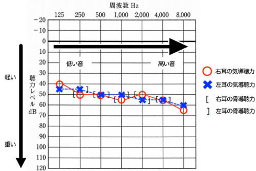
※正常値は20~30dB以内
【診断基準】
近接するする3つの周波数（Hz）を合わせると30ｄB以上の感音性難聴が72時間以上続くもので、急性低音障害型感音難聴を除くもの。
・骨導聴力：頭蓋骨から直接内耳に振動が伝わって感じる音。
（表記:［→右耳、］→左耳）
※外耳や中耳を通さずに音の伝わり方を知らべる方法。町医者だと調べられない病院もあるので、なるべく骨導が調べられる病院を選んで受診してください。病気を診断するのに大きく関係します。また、ここが悪い場合は、内耳から脳の聴覚伝導路に問題があります。
・気導聴力：話し声や物音や音楽など通常の音が空気を振動することによって伝わる音。
（表記:〇→右耳、×→左耳）
【分法とは】
オージオグラムを見ると3分法、4分法、6分法とあります。
これは何ですか？とよく聞かれるので説明しておきます。
人間の会話に最も必要なのは500～4000Hzと言われています。
通常は4分法を使うが労災認定には6分法が使われる。
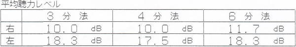
A、B、C、Dは各Hz数のｄBの数値を足してください。
A（ｄB）ー500Hz
B（ｄB）ー1000Hz
C（ｄB）ー2000Hz
D（ｄB）ー4000Hz
【計算方法】
3分法 （A+B+C）/3
4分法 （A+2B+C）/4
6分法 （A+2B+2C+D）/6
※病院によってはオージオグラムデーターを患者さんに渡してくれない病院もあります。
その場合は、患者様からオージオグラムの控えを欲しい、もしくは携帯で写真を撮るなどして当院に来る際にお持ちください。
オージオグラムは最初の状態を把握するのに大変重要なデーターになりますので必ず病院で聴力検査を行った場合は控えをもらうようにしてください。
難聴の種類
難聴には３種類あります。感音性難聴、伝音性難聴、混合性難聴です。【感音性難聴】
内耳、聴神経、聴覚中枢などの音を感じる部分に問題があるもの。
気導聴力と骨導聴力が両方20dBより悪く、同じレベルであれば、感音性難聴と診断されます。
突発性難聴は感音性難聴に含まれます。
他にもメニエール病、騒音性難聴など、内耳に原因がある疾患でよく見られます。
【伝音性難聴】
外耳から中耳までの音を伝える部分に問題があるもの。
骨導聴力が20dB以内の正常範囲なのに気導聴力が20dBより悪いと伝音性難聴となります。
これは外耳（外耳道狭窄症、耳垢塞栓など）疾患や中耳炎などの中耳（鼓膜、耳小骨、耳管）の疾患でよく見られます。
【混合性難聴】
感音性難聴と伝音性難聴の両方が合併するものを混合性難聴と言う。
細かく言うと、気導聴力と骨導聴力が両方20dBより悪く、かつ気導聴力が骨導聴力より悪いものを混合性難聴と言います。老年性難聴は多くの場合、混合性難聴と言われます。
上記のオージオグラムは、オージオメーターという聴力検査機によって測定されます。
【片耳だけ起こるの？両耳にはならないって本当？再発しないの？】
一般的には突発性難聴は片耳だけに症状が出ると言われています。
しかし、実際には両耳に症状が出る場合も極少数ではありますがあります。全体の1％程度です。突発性難聴は再発しないと言われていますが、実際には再発する例もごく少数あります。
また、片耳が難聴になった後に反対側が難聴になり、結果的に両側に症状が出るというケースもあります。
そのため、治癒後も3カ月は睡眠、過労、ストレス、気圧には注意が必要となります。
耳が治ったからと言って油断して仕事などを頑張ってしまうと、再発してしまう方も少なからず見受けられますので、くれぐれも治ったからと言っても3カ月間は油断しないで下さい。
3カ月間は生活習慣を整えるように注意してください。
施術方法について
【完治の基準】低い音（125Hz）から高い音（4000Hz）までの全域で、聞こえ方が20dB以内に回復した時が、「完治」の基準とされています。
【病院での施術法】
施術は早ければ早いほど聴力が改善する確率は高まります。
厚労省の報告では、１ヶ月以内に施術を始めた人のうち、約1/3は完治し、1/3はある程度回復しますが難聴や耳鳴りを残し、1/3は聴力の改善が全くなかったという統計があります。
つまり、突発性難聴はすぐに病院に受診しても1/3しか完璧な状態に戻らないのです。
突発性難聴に対する西洋医学的な施術は、ステロイド剤を短期間の間に大量に投与する「①パルス療法」「②高圧酸素療法（難聴や耳鳴りが増す場合あり）」「③星状神経節ブロック」「④鼓膜内ステロイド注入（鼓膜が塞がらなくなった場合は手術が必要）」「⑤薬による薬物療法（大量のステロイドにより骨が脆くなる、また様々な病気を発症させる）」などが代表的です。特に良く使われるステロイド療法も1週間試して聴力に変化がない、または聴力が低下する場合はステロイドをその後続けても効果がないと言われています。
ステロイドは長くても2週間までですが、1週間試して効果がない場合は他の方法に踏み切る必要があります。
しかし、どの施術方法も高額で1/3の人にしか効果がありません。
また、現在の新型感染症の状況下だと入院をしてしまうと、病院に退出願いを提出し、病院と当院への鍼灸の併用施術が出来なくなってしまいます。
それは、病院から外に出ると、ウイルスをもらってくる可能性があり、病院でクラスターを発生させないため、外出許可を出さないのです。医師から入院しますか？どうしますか？と聞かれる場合は、通院での投薬治療と当院への鍼灸施術をおススメします。本当に重症の場合は強引に入院させられます。特にめまいが強く頻繁に吐いてしまう場合は、強制的に入院させられている場合が多いように感じます。
そして、最も重要なことは病院での施術方法で、有効性がはっきりと証明されていてエビデンスがしっかりとした治療法は一つもないということです。試しに、病院の先生に『突発性難聴の治療方法のメカニズムははっきりしてますか？？』と聞いてみ下さい。
ちなみに、ステロイドが難聴に有効というエビデンスは確立されていません。しかし、なぜだか良くなる人がいるので行っているというのが現状なのです。
これは入院しても同じです。入院は、仕事や家庭のストレスから離脱させること、栄養状態が整った食事管理ができる事、睡眠時間を管理できること、がメリットなのです。
入院したからステロイド療法が効きやすく聴力が回復しやすいということではありません。
入院をしたくないのなら、仕事や家庭のストレスを除き、食事や睡眠を調節できるのなら入院は必要ありません。そして、病院へ通院にすることにより当院の最先端施術を受けられることが最も重要な利点となります。
【鍼灸での施術方法】
発症日から、1分1秒でも早く当院での鍼灸施術を行うかどうかが、とても重要になってきます。
早ければ早いほど聴力の回復が良好となります。
当院の鍼灸施術では、『耳の血流を直接刺激する当院のみが行うオリジナルの施術方法』となるため西洋医学とは全く違った観点からのアプローチとなります。
世界的に見ても、どこの大学病院でも、どこの鍼灸院でも行っていない全く新しい考え方による施術法で耳の血流を良くするのに最適な方法と考えております。
鍼灸施術は芸術的観点があるため誰に鍼灸施術してもらうかが大変重要です。
私は鍼灸学校での教員ををしていて1学年に生徒が120人いても、元々持った素質がある学生は1学年で2～3人ほどしかいません。
鍼灸施術は芸術的観点があるため、どんなに勉強しても、技術を磨いても素質があるかどうかが大変重要なんです。
つまり、素質がある人に施術してもらうと効果が全然違う物になるのです。
逆に普通の鍼灸師の施術を何回受けても効果が乏しくなってしまいまい、その結果、聴力が改善できたはずの方までも、聴力を失う結果になってしまうのです。
例えば、絵が好きで、難関の芸大を出ても絵描きで生きていける人は、ほんの一握りですよね？
これと同じように鍼灸師もほんの一握りの能力が高い先生に施術してもらわないと、全く効果がでません。
お金と時間の無駄になってしまいます。
ましてや、一生、耳が聞こえなくなるかもしれない一大事に近くに鍼灸院があるから行こうではダメなのです。
そして、患者様がその能力の高い鍼灸師を探すのは至難の業です。
60人に1人位しか能力の高い人がいません。
そして、皆さんが実際に60ヶ所の鍼灸院を訪れて試す時間はありません。
その少ない鍼灸師を患者様が探すのは至難の業です。また、スタッフが多い鍼灸院でも誰に受けるかが大変重要になります。
その点、当院では鍼灸の高い技術に合わせて様々な最新技術による施術を行います。
その点、当院では耳鼻科鍼灸の高い技術に合わせて、様々な最新技術による施術を行います。
この最新技術は、耳の血流をアップさせ、耳の中の浮腫みを取り除き、内耳を揉み、聴神経を活発にし、耳の中にある筋肉を鍛え、尚且つ全身の血流も良くする施術方法になります。
高酸素療法やステロイド療法よりも、直接的に血行をアップさせる施術方法になります。
『病院でお医者さんから治らない』と言われてもまだ諦めないでください。
当院に来院されている多くの患者様も同様に、『もう治らない』とお医者さんに言われている方が多くいらっしゃいます。
2週間以内に鍼灸施術を開始する事で改善する確率は96％と西洋医学のみの施術よりも飛躍的に上がります。
発症後、3カ月以上経ってしまっている方でも、今の状態より回復する方もいますので諦める前に一度当院の施術を体験してみて下さい。
また、妊娠中の方、高血圧、胃潰瘍、糖尿病、ステロイドが苦手な方などのステロイドを使用する事ができない患者様にとっては鍼灸が第一選択になります。
高血圧、胃潰瘍、糖尿病がある人は症状が悪化することがあるため薬の服用にも注意が必要です。
当院での施術を希望の患者様で
遠方から来院される方は、集中的に施術を行いますので、1〜2週間東京近郊に宿泊していただき連続的に施術を行います。
集中施術をご希望の方はHPの予約ホームよりご相談ください。
電話でのご相談はできませんのでご理解ください。
必要な場合のみ、こちらからご連絡いたします。
【当院での突発性難聴の鍼灸施術報告】
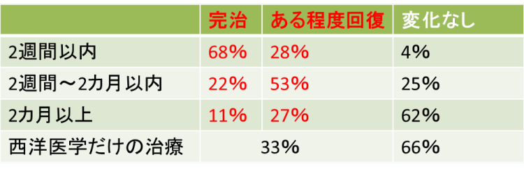
※ある程度回復は30～50㏈の日常会話が聞ける程度
上記の結果からわかるように、入院中の患者様であっても外出願いを病院に提出して鍼灸施術との併用をすることにより飛躍的に完治する可能性が上がります。
一生、耳に障害を持って残りの人生を送るのか、全く健康な状態で生活ができるかは鍼灸施術に踏み切るどうかにかかっています。
少しでも可能性を上げたい、治りたいという方はご相談下さい。
平均施術回数は、発症後2週間以内の患者様は13～24回となっております。
多少お金はかかりますが、あなたの聴力は今しか回復させることができません。
お金は健康なら、また頑張れば稼ぐことはできると思います。
突発性難聴の施術は集中的に施術を行いますので、遠方から来院する患者様は東京近郊に1～2週間宿泊していただき連続施術を行います。
突発性難聴でやってはいけないこと
入院したくないようなら次の事には注意してください。(入院中の方も同様です)ここで重要なお話をします。今までの積み重ねの不摂生の結果が、今の耳に現れているのです。このまま、生活習慣を変えないで生活をしていれば、さらなる大きな取り返しのつかない大病になってしまいます。耳を改善するには生活習慣を変えて体を健康にすることが重要なんです。
耳も体の一部です。耳だけ治しても体が健康になっていなければ再発しますし、耳の次はどこか他の臓器が悪くなります。
劇的に聴力が改善する方の特徴があります。
それは、言われたことを素直に受け止め実施できることです。これは突発性難聴だけでなく多くの疾患の患者様に当てはまる事です。社会でも『素直に言われたことを実施する人』が成功して上手くいってると思いませんか？？
下記の内容に気を付けて当院の施術を受ければ聴力が回復するのは目の前まで来ていると言っても過言ではありません。
①喫煙
タバコのニコチンは血管を収縮させる働きあるため、脳、皮膚、内耳への血流を停滞させてしまいます。また、タバコの一酸化炭素は、脳や内耳への酸素供給をブロックしてしまうため、突発性難聴の患者様は絶対的禁忌となります。 これは電子タバコも同様になります。 耳が治るまではお止めください。
② お酒
お酒は体を浮腫ませてしまうため、内耳を浮腫ませてしまうためおススメできません。
例え、少しだったとしても難聴が治るまでは禁止です。
しかし、どうしても接待などで断れない状況の場合は、ウーロンハイを注文してください。
注文したらすぐにトイレに行き、その時に店員さんに突発性難聴で医師にお酒を止めらていてお酒が飲めないんです。しかし大事な接待なんです。ですので、ご協力いただけると助かります。と言ってから『私がウーロンハイと言ったらウーロン茶を持ってきて下さい』と伝えてください。 そうすると、会食している相手にも気を使わせなくてすむでしょう。
③体を冷やすこと
体温より低い食べ物を食べ続けると毛細血管の血流が悪化し、その結果、免疫力が低下します。 そのため、36℃以下の食事は控えてください。
サラダ、お寿司、フルーツ、ヨーグルトなどすべて耳が良くなるまでお控えください。
ただし、36℃以上に温めて食べるのなら食べても構いません。
冷たい物ばかり食べると体温が低下し平熱が下がってしまいます。35度台の方の80％は癌になると言われている程です。
体温を高くし免疫力を高くすると自然免疫（マクロファージ）が全身に回ります。
マクロファージは全身の至るところにいます。
余談ですが、このマクロファージはいる場所によって名前も変わります。血液中にいれば単球。脳にいるとグリア細胞、肝臓にいるとクッパー細胞と名前が変わります。
これらの自然免疫は体温が高いことにより機能しやすくなります。
皆さん、平熱を36.8℃まで上げられるまで冷たい物を控えて頑張りましょう。
④睡眠
突発性難聴を治すセルフケアで睡眠が最も重要です。
突発性難聴の患者様のほとんどがストレス、過労、睡眠不足などを訴えます。
そのため、22時~26時までの間に必ず寝るようにしてください。
その間をゴールデンタイムと言って、人間の体を修復するのに働く『成長ホルモン』の分泌が高まります。この成長ホルモンは傷ついた細胞や器官を寝ている間に修復してくれるのです。
最も重要な事なのに『出来ない、無理という』方がいますが、命を削ってまで仕事は重要ですか？寝れなくても22時までには床に入り横になっているだけでも体は休まります。そして、眠れなくても床に入る習慣ができれば数か月後にはほとんどの方が寝れるようになっています。
22時に寝て朝の5時に起きて仕事をしてください。夜型人間は健康に良くありません。早起きは『3文の得』といいますが、早起きは『健康長寿への第1歩』とも言えます。
22時~26時以外の時間で寝ても成長ホルモンによる体の修復は行われにくくなります。病院での入院は睡眠を確保し仕事から離脱させることが一番の目的とされていると言われているくらい睡眠は大事なものになります。
⑤ウォーキング
1日30～60分の歩行は全身への血液循環をアップさせるのに良いのでおススメです。
これはWHO（世界保健機構）の『健康の定義』の中でも1日30分程度の歩行と載っている位、健康には重要なことなんです。歩くことにより全身の血液循環がアップします。
多くの病気は『血流』を良くすることによって改善されていきます。病気が発症している部分は、血流が滞り、うっ滞したり、炎症を起こしたりしています。それは血液が流れないため、うっ血や炎症が起きているのです。癌も血流が悪い部分にできると言われています。
そのため、ご自身でもお金をかけずに簡単に行える健康法は『歩くこと』なんです。
日本人の1日の平均歩数は男性6,794歩、女性5,942歩（平成30年国民健康・栄養調査より）となっております。その歩数では少ないのです、歩数で言うと1日13,000歩程を目安にしてください。80歳以上の方は1日10,000歩ほど。
心臓から脳に血液が送られる量は1分間に1.4ℓ、歩くことでその10倍もの血液が脳に送られるのです。脳に血液が行くということは耳に血液を届ける事が出来るのです。
しかし、走ることが趣味の方や、筋トレが趣味でジムでハードワークを行っている方は、それが原因で突発性難聴になっている場合がありますので、心地よい程度の歩行以外は突発性難聴が治るまでは禁止となります。ランニングも筋トレも交感神経が優位になるため突発性難聴を悪化させます。歩行をする際も急いで早歩きをするのではなく、ゆったりと町の景色を見ながら歩く程度で、ほんのり汗をかく位が程よいペース配分です。あくまでも、副交感神経を優位にしてリラックスするための歩行が健康にいいのです。
⑥音楽がうるさいところに行かない
耳の神経がやられている環境でも尚且つ、耳に刺激を与えてしまうと耳鳴りや突発性難聴が治らなくなってしまいます。音楽も副交感神経を優位にするような、ゆったりとした音楽を小さい音でイヤホン以外で聞くのなら問題ありません。
しかし、基本的には音刺激は天敵となるため悪い方の耳に耳栓を詰めて、音を遮断した状態でゆったりとした音楽を楽しまれてください。
⑦水泳
水泳は耳に水圧がかかるためおススメできません。
しかし、突発性難聴が治れば全く問題ありません。
⑧鼻を強くかむ
鼻を強くかむと鼓膜に負担をかけて中耳炎になることもあるので、なるべく優しく行ってください。同様に鼻水をすする行為もあまりよくありません。
⑨カフェイン・香辛料
カフェインは血管を収縮させてしまい耳の血流を停滞させてしまいます。
カフェイン含有率の高い物は、コーヒー、緑茶、紅茶、ウーロン茶、栄養ドリンク、エナジードリンクなどです。
また、カフェインは交感神経を刺激する作用があります。 そのため、カフェインを寝る前に飲むと眠れなくなるのです。カフェイン中毒が原因で突発性難聴を発症する人もいます。
香辛料も神経を興奮させる作用があるので施術期間は控えるようにしてください。
交感神経が働くと脳や内耳の血管が収縮するため耳に良くありません。
⑩気圧が変わるところ（山など、ダイビング）
山に登ったりすると耳が詰まったり、耳鳴りがしたりすることがあると思います。
ダイビングや水泳も水圧がかかり耳抜きをしたりするので耳の負担が大きくなるのでおススメできません。
また、6階以上のエレベーターも極力避けるようにして、出来るだけ階段を使うようにしてください。高層マンションの方は当院にご相談ください。
⑪食事
朝食を抜く人に突発性難聴が多いというデータもあります。
そのため、朝食は必ず摂るようにしてください。
難聴に良い栄養素はB1、B2、B12です。病院でも薬として貰いますが薬より天然の食材の方がはるかに吸収率がいいのです。そして、もちろん効果も高いです。
・ビタミンB1
末梢神経の働きを高め、脳や体の疲れを補う働きがある。豚肉、うなぎ、玄米、蕎麦、大豆に多く含まれる。
・ビタミンB2
細胞の再生やエネルギー代謝に不可欠。また、疲労や老化の原因になる過酸化脂質の分解作用もある。納豆、レバー、卵、チーズに多く含まれる。
・ビタミンB12
末梢神経を修復し、末梢神経の働きを高める作用がある。青魚、貝類、海苔に多く含まれる。
難聴に良い食べ物を簡単に覚えるには『まごわやさしいかれ』と覚えましょう。
ま→豆類、ご→ゴマ、わ→ワカメ（海藻類）、や→野菜（食物繊維）、さ→さかな（青魚）、し→しいたけ（キノコ類）、い→イモ類、か→貝類（あさり、シジミなど）、れ→レバー（B12が豊富）
その他にも、腸内細菌を増やす発酵食品（納豆、キムチ、チーズ、ヨーグルト（15秒レンチン）、ぬか漬け、味噌）を取りましょう。腸内細菌は色々な種類が腸にいた方が良いので納豆だけというのではなく、色々な発酵食品を摂ってください。その腸内細菌のエサになるのが食物繊維です。エサが無いと腸内細菌が増えません。免疫の80％は腸内にいるのです。腸内細菌を増やさないと免疫力は高まりません。
また、甘い物、脂分の多い物、加工肉、添加物（冷凍食品、コンビニ食、お惣菜、ファーストフード店）などはお控え下さい。
次に、難聴に良い食材が沢山あるので『沢山食べないと！』と思わない出ください。なるべく腹八分を心がけて下さい。病気をしたときは食欲がなくなりますよね？
これは体が免疫を高めて、病気を治そうとするので食欲がでないのです。
つまり、病気を治したい時は腹八分を心がけて下さい。満腹にしてしまうと消化にエネルギーを消費してしまい全力で病気と闘うことができません。
⑫塩分
塩分を摂りすぎると、血圧が高くなり、体が浮腫みます。血圧が高くなるということは血液が末端まで届きにくくなります。また、体が浮腫めば内耳まで浮腫んでしまうのです。
耳鳴りを解消するのにも減塩が有効とされています。
病院食は味が薄いですよね？しかし、2週間我慢すれば舌の味蕾が生まれ変わるので薄味でも美味しく感じれるのです。
⑬仕事
仕事はなるべく有休を使うなどしてて、当院での施術期間中だけでも行わないでください。
完治したのに仕事を始めてすぐに難聴を再発した方、仕事場に行ったら治っていた耳が悪化したなどよく見受けます。資格試験を頑張っている方にも多いように感じます。
今は体から『休んで、もう限界』と合図が出ているのです。ウサギと亀の話にもあるように、しっかりと休んでからスタートすればいいのです。人生のゴールはまだまだ先なのですから。
⑭ 新幹線
現在、全国から来院される患者様も多くいらっしゃいます。
また、トンネルを超える時などにガムを噛むようにすると耳管が開くために耳閉塞感（耳詰まり）が出にくくなります。
⑮飛行機
飛行機で来院される場合は離陸時と着陸時にガムを噛むようにしてください。
しかし、当院に来院される目的以外では新幹線も飛行機も禁止となります。
⑯入浴
お風呂に入る際にシャワーの音が内耳の刺激になるため、入浴中は耳が悪い方に耳栓をして音刺激を避けて下さい。また、入浴後のドライヤーも刺激になるので、できるだけ避けるか、もしくは、耳栓をして行ってください。
※治癒後3カ月間は上記内容に注意して生活を行ってください。
突発性難聴再発をする方、メニエール病に移行するタイプの方がいるためです。
突発性難聴の方に毎日やってほしいこと
耳と首の筋肉の緊張をほぐして耳の血流を改善する方法と、自律神経のバランスを調整する方法をご紹介します。自宅で簡単にできるセルフケアになります。
【耳ひっぱり運動】
耳を、両手で両耳を10回ずつ上、下、後ろに手でひっぱっていきます。
次に、耳介を手でひっぱりながらグルグル回します。前回りに10回、後ろ回りに10回ずつです。
耳を極度に強くひっぱり過ぎないように注意しましょう。
痛くなく、気持ち良い程度の強さで行っていきましょう。これにより内耳への血流をが改善してきます。
【首もみほぐし】
首の筋肉の緊張は、内耳への血流を滞らせてしまいます。
首にある筋肉、特に胸鎖乳突筋の緊張をほぐしてあげる事で、内耳の血流を改善します。
胸鎖乳突筋は、耳たぶのすぐ後ろにある骨のでっぱり(側頭骨の乳様突起)から始まり、鎖骨の内端までつながる筋です。両手を当てて首を左右に回すと簡単に触れる事ができます。
この胸鎖乳突筋を指で優しくつまむようにして、揉みほぐしていきましょう。
また、肩こりのある方は、肩をもみほぐす事でさらに首から内耳への血流が改善されます。
以上の耳と首の血流改善のためのセルフケアを、1日3回以上、気づいた時に行っていきましょう。

【突発性難聴に効く呼吸法】
ストレスは、突発性難聴のきっかけになる事が多く報告されています。
実際、当院にいらっしゃる多くの患者様が、突発性難聴の始まった時期にストレスやプレッシャーを感じていたと言っています。
心身ともにストレスがかかると、自律神経の中の交感神経が作動し副交感神経とのバランスが崩れて様々な不調が体に現れます。
よく、自律神経失調症と聞くと思いますが、この状態は交感神経が優位になり、しっかりと副交感神経が働かない状態のことを言います。
この自律神経が乱れた状態、つまり、副交感神経を優位にさせるためには腹式呼吸が効果的です。
やり方は、簡単なので自宅でも気軽に行えます。
① おヘソのあたりに両手を当て背筋を伸ばし座る
② 3秒かけて鼻から息を吸う（この時に胸とお腹を膨らませるのがポイント）
③ ②の状態のまま、3秒止める
④ 6秒かけて鼻からゆっくり息を吐く（この時お腹を限界まで凹ませる）
⑤ これを1日10回行う
慣れるまではその日の体調に合わせて、無理のない範囲で行いましょう。
これをたった、10日間行うだけで副交感神経優位の体になることができます。
つまり、突発性難聴になってしまっている内耳に血液をより多く届けることができるようになるのです。
【耳にホッカイロを貼る】
ヘヤーバンドやニットキャップの内側にホッカイロが当たるようにして被り、耳を温めるようにします。すると耳が赤くなり耳の中の血液循環がアップします。
低温火傷にならないように注意して行ってみて下さい。
【ヨガ】
実はアメリカの病院ではメディカルヨガと言って病院内でヨガを行う施設があるところが非常に多いのです。
ヨガは筋肉のストレッチと腹式呼吸を意識して行う運動で、自律神経のバランスを調節することができます。
ヨガは様々な筋肉のストレッチをする事で交感神経を興奮させます。また、ヨガの最後にシャバーサナ（大の字になって横になるもの）のポーズをとり副交感神経を優位にさせて終了するのがヨガの一連の流れになります。
つまり、ヨガの運動の中には交感神経と副交感神経の両方を調節することができるのです。
当院でおススメしているのは、寝る前に大の字になってゆっくりと息を吸い、その際に胸とお腹を限界まで膨らませ、その後、鼻からゆっくりと吐くを10回行ってもらうだけでも十分と考えます。
だからといって、わざわざ、ヨガの教室に入るのではなく、ご自宅でyoutubeを見ながら続けるだけで十分です。
また、ホットヨガは絶対禁忌になります。多湿の中で運動を行うため脱水状態になりますので治るまでは教室はお休みしてください。
家だとできない方は教室に入るのもいいと思いますが、自分の意識次第で自宅でも簡単にお金をかけずにできるのがヨガの良いところです。
患者様の喜びの声
根岸明日香様／発症後2週間／施術回数3回【3日間の間にたった3回の施術で完治しました！！】
1月中旬より、突発性難聴の治療で、合計3回の鍼灸施術を行っていただきました。
病院では『今より良くなる可能性は非常に低い』と言われ、半ば諦めておりましたが、知人からの勧めでこちらに通院させていただくようになり、はじめての鍼灸施術で耳の閉塞感がなくなり音が少し聞こえるようになりました。
それまでは病院で2週間のステロイド治療を行っていたが全く良くならなくて、左耳ではほぼ音が聞こえない状態でした。
鍼の治療に関しては経験がありましたので不安はありませんでしたが、正直、経験してきた『鍼』よりもここまで効果を実感出来る治療を受けたことはありませんでした。
先生も親切で施術の時には『次のは痛むけど頑張ってね』と声をかけてくださり気遣っていただけてとても親切な先生でした。
2回目、3回目と施術を行っていただき、参考までにと耳鼻科で聴力検査を行ったところ、数値上なんの問題もありません！と3回の治療で全快！！
左耳の8000Hｚの数値なんか良いほうの右耳よりも良くなってしまいました。
病院では2週間なにも変わらなかったのに、たった3日間でここまでよくなったので、神様会えたような気持ちです。
TeachingBeauty鍼灸整骨院の皆様ありがとうございました。
私は病院でもう治らないと言われたのに、治ったのでとても感謝の気持ちでいっぱいです。
突発性難聴で悩んでいる方は諦めないで相談することをお勧めします。
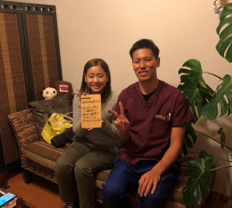
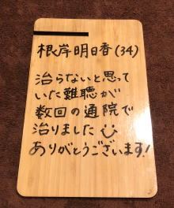
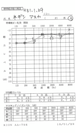
岡島猛様／発症後1週間／施術回数12回
【改めて耳が聞こえるありがたみを実感しました。】
ある日突然、まさかの突発性難聴になり、翌日耳鼻科に行き、 ステロイドを処方薬として出され一週間飲み続けていましたが症状は悪化するばかりでした。
仕事を休むわけには行かず、入院を選択しなかった私の左耳はもう終わったかな、、、、と思いました。
難聴になって一週間たった日の夜にネット検索してみると、９６%難聴回復させる自信あり！というページを見つけ、よく読んでみたところ、西洋医学だけに頼らず、東洋医学的視点から治療を行いますびっくりマークという、私にとっては大変興味深い治療内容を掲げているteaching beauty大宮先生のホームページが気になり、電話してみましたところ、丁寧かつ、熱いメッセージを同先生から頂き、駄目元で千葉から世田谷まで行ってみました。
すると三日目くらいには、電話が聞き取れなくなっていた左耳でも声が聞き取れるようになり、通常聴力まで、回復したのですから驚きです。かつ、仕事を休むことなくです。
病院の施術より、こちらの鍼灸院での施術の方が最新の治療と感じます。お困りの方は相談するといいと思います。きっと、耳のためになる情報をもらえると思います。
また、今は娘の姿勢矯正を大宮先生にお願いしており、娘も楽しく通わせて頂いております。

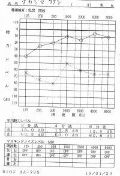
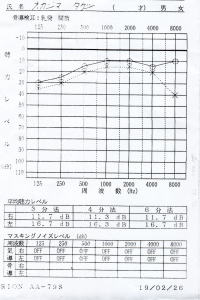
黒木一人様／発症後1週間／施術回数12回
【重度の難聴だったのに今は全く問題なくなりました。】
まずは、無事難聴が回復して本当に良かったです。
私は54歳ですが、今まで大きな病気もなく、 毎年受けている健康診断も問題なく、若い時と同じように生活して仕事をしていました。
好きな時間に起きて、好きな時間に寝る生活です。
ある朝起きると、右耳が水が詰まったようになり、聞こえづらくなりました。
前日に行ったプールのせいだと思っていたのですが、 翌日も治らないので耳鼻科に行ったところ突発性難聴と診断されました。
それから約1週間、内服薬を飲んでいましたが、当初より聴力が悪化して、もっと聞こえづらくなり、段々と悲観的に考えるようになっていました。
突発性難聴の原因や詳しい内容を調べるうちに、TeachingBeauty鍼灸整骨院のHPを見て、 先生の紹介や同じように他の方の口コミを拝見して、 『全部本当の事かな？？』と思いながらも電話で相談したところ、こちらの鍼灸院では約96%の確率で回復されており、初期治療がとても重要と説明され、 『病院での入院の勧めを断って』病院と並行してTeachingBeauty鍼灸整骨院に通院する事にしました。
鍼灸施術やマッサージは初めてでしたが、突発性難聴の方の何人もの前例を説明されて、 熱心に施術を行って頂けたので不安もなく突発性難聴の治療に専念する事ができました。
2週間程で効果が現れ始め、約1ヶ月でほとんど回復しました。
病院での内服薬だけでは、ここまで回復しなかっただろうと思います。
片方の耳だけで仕事にも支障が出ていたので、完治出来て本当に良かったと思います。
これからは、生活時間にも気を付けて過ごしていきたいと思います。
私のような重度難聴の方も諦める前に大宮先生に相談することをお勧めいたします。
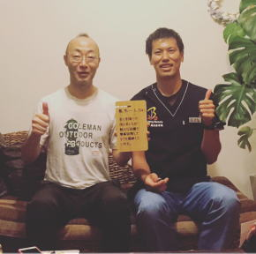
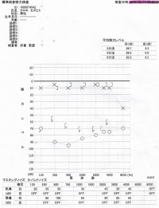
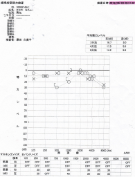
清水健太様／発症後3週間／施術回数19回
【入院中、外出願いを出して通院しました。】
私は転職したばかりで、仕事でストレスを感じる生活を毎日送っていました。
するとある日、耳鳴りが1週間続き次第に耳鳴りの大きさも強くなってきて、めまいも出てきたため病院に行くと、突発性難聴と診断され、その日のうちの入院することになりました。
入院中は服薬治療が主体でしたが、毎回、聴力検査をするも聴力がなかなか良くならないため、妻がネットでTeachingBeauty鍼灸整骨院を見つけて来てくれて相談してみたら？と言ってくれて相談したことがきっかけでこちらの鍼灸院にお世話になりました。
入院中なので毎回、退出願いを出して鍼灸院に行く生活を送っていたのですが、入院中は特にすることもなく暇なため、鍼灸院に行くのが唯一の楽しみになっていました。
症状としては、声が反響する、高い音のキーンとした耳鳴りが消えない、いつも聞いていた音楽の音が聞こえない、フラフラとめまいがするという状態でした。
初回の鍼灸施術で、耳鳴りが小さくなり、音も少し聞こえるようになりました。
施術の次の日にはめまいも全くなくなりました。
『こちらの先生からも私のタイプの難聴は治りやすいですよ』と言って頂いたため少し安心することができました。
12回目の鍼灸施術の頃には聴力、耳鳴り、声の反響、めまいも全く良くなったので、病院を退院することになりました。
退院できたので、次の日から会社に出社して溜まっていた仕事をこなし毎日遅くまで働き、資格試験の試験日も近づいていたので睡眠時間を削って勉強と仕事を頑張ってしまいました。
すると、また、音が聞こえなくなり、高い音の耳鳴りが出てきました。
丁度、退院してから10日後くらい経っていたと思います。
不安になったので、すぐにTeachingBeauty鍼灸整骨院へ相談したら、すぐに施術を再開した方がいいということで、また、鍼灸施術に通うことになりました。
その後は良くなったり、悪くなったりを繰り返し、最終的には全く問題ない状態まで良くなりました。
本当に先生にはお世話になりました。
今は妻も鍼灸施術でお世話になっております。
今後とも夫婦共にお世話になりたいと思います。
色々先生から学ばせてもらったことを糧として生活習慣の改善を図ります。
突発性難聴で困っている方は相談することをお勧めいたします。
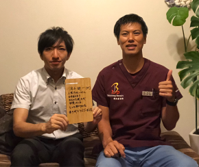
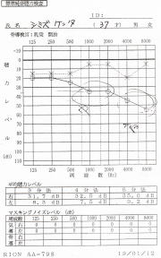
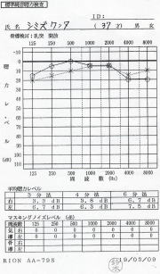
山本真里様／発症後2週間／施術回数８回
【突発性難聴と2カ所の病院で言われたけど耳管開放症だった】
ある朝起きたら耳が詰まった感じがあり、2日後近所の耳鼻咽喉科で「突発性難聴」との診断を受けました。
こちらでは、聴力に異常がないとのことで薬の服用で様子をみましょうとのことでした。
薬を服用するもなかなか症状に変化がないので、ネットで検索し、耳鼻科で有名な大手の病院に行きました。こちらでは左耳に若干の聴力低下が認められたため、ここでも「突発性難聴」との診断を受け薬の処方を受けました。
症状としては、左右交互になる耳の詰まりと、若干の聴力低下、ぼわ~んとした耳鳴り、周りが騒がしいと頭がクラクラする、などでした。
最初の病院でも、後の病院でも症状が変わらないので、ネットを調べれば調べるほど、治らない不安にかられました。
病院以外に治る方法を調べる中でこちらの鍼灸院にたどり着きました。
電話して症状を伝えたら施術はなるべく早いほうがいいとのことで、その日の夜におじゃましました。
そうすると、こちらの鍼灸院の院長は色々な検査をする中で突発性難聴ではなく『耳管開放症』との診断で、耳管開放症は病院でも誤診が多い病気でこちらの鍼灸院にはそのような患者さんがとても多いんですとの言葉と「ちゃんと治しましょう!」と力強く言ってくださったことに、頼ってみようという気持ちになり、その日から集中して通いました。
最初の近所の病院に再診した際に、鍼灸院で耳管開放症じゃないか？と言われたことを伝えたら病院では、『突発性難聴』で間違いないとの見解でした。
そこで、鍼灸の先生に相談したら、次の大きな病院の時に、他の病院で『耳管開放症』と言われたと行って見て下さいとのことで、そのように大きな専門病院の再診の際に伝えると、『耳管開放症』であることが判明しました。
やはり、大宮先生の読み通りであったこと、医師より信頼できる勉強量にとても感動し信頼感が増しました。
そんなこんなで、鍼灸施術6回目が終わった後から聞こえと耳詰まりの違和感がなくなりました。聞こえないことよりも治らない不安感を、大宮先生の溢れる自信で取り除いていただきました。 8回の施術を最後に、「耳の症状では、もうこちらにお世話にならないようにしたいです。」と笑顔で終わりを迎えました。
耳を治してくださったこと、体質改善の方法を教えてくださったこと、共に大変感謝しています。本当にありがとうございました。

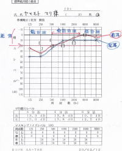
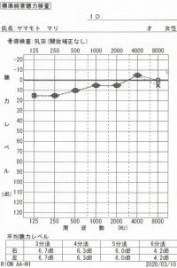
棚辺美宝様／発症後2日／施術回数3回
【初回の施術でほとんど元の状態に戻りました。】
ある日の朝、急に耳の聞こえが悪くなっていることに気が付きました。
しかし、そのうち治まるだろう、仕事で忙しかったから体が疲れているだけだろうと1日様子を見ました。 しかし、一向に良くなりません。
それで不安になり近くで有名な耳鼻科を受診しました。
突発性難聴との診断でした、お薬を出されて。また2週間後に来てくださいとのことで、これで治らなかったらどうしよう、他にやれることはないのかと、色々な人に相談していたら、以前友達が突発性難聴でお世話になった凄腕の先生がいるとのことでこちらのTeachingBeauty鍼灸院さんを紹介してもらいました。 初診時に聴力検査表を見せると、これは突発性難聴ではないですね。急性低音性感音性難聴もしくは耳管開放症の可能性があります。
突発性難聴とは施術方法が異なりますので、そちらの施術で進めていきますねとのことでした。図を使って親切に説明してくれて自分の耳の状態が詳しくわかったし、突発性難聴ではないとのことも理解できました。
初回の鍼灸施術を受けたその場から、耳の聴力、耳の詰まり感、低い音のザ～とした耳鳴りがす～と楽になって聞こえが元の状態に戻ったような感じがしました。 しかし、次の日朝起きると、少しまだ耳の詰まり感が気になりました。それ以外の聴力は問題ありませんでしたが。 2回目の鍼灸施術で元の状態に戻って完治にいたりました。 少ない時間で耳が回復できたことはとてもありがたく思います。 大宮先生本当にありがとうございました。
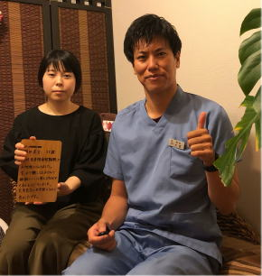
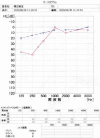
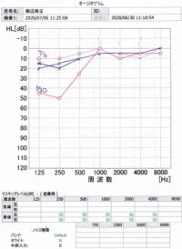
施術にかかる時間
症状により異なりますが、施術時間は下記を目安として下さい。初診時 60～90分程度
※初診時は問診表の記入や初回検査、しっかりと丁寧な問診を行いますので多めに時間がかかります。
2回目以降 60分程度
場合により上記の目安時間より長くかかることもありますので、お時間には余裕を持ってご来院ください。
服装・持ち物
鍼灸施術を行う際は当院で患者着をご用意しております。そのため、どのような恰好でいらしていただいても問題ありません。
個室治療のため、 着替えのスペースもございます。
持ち物としては、病院でのオージオグラムをお持ちください。
病院でもらっていないという方はかまいません。
施術料金
| １回 | ￥49,500(税込) |
|---|---|
初回の施術から耳が良くなるのを実感いただける方が多いです。
回数券12回 ￥594,000（税込）
【病院での治療費のおよその金額】
・人工内耳手術 400～500万円（保険適用外）
・病院での入院10日 30~60万（治癒率30％）
・高酸素療法 30~40万
・補聴器 15~40万(高度難聴では使えません)
▼無料相談、ご予約はこちらから▼
予約ホームよりご予約ください。
📞03-6413-7803
▶耳鳴り、耳閉塞感、難聴について
▶メニエール病について
▶急性低音障害型感音難聴について
▶耳管開放症について
▶聴力の伝わり方について
Ｔｅａｃｈｉｎｇ Ｂｅａｕｔｙ

〒154-0014
東京都世田谷区新町3-21-1
さくらウェルガーデン301号室
TEL：
03-6413-7803
→アクセス
診療時間
【通常診療】
月火金土
午前：09:00～13:00
午後：15:00～19:00
木曜日
午前：休診
午後：15:00～19:00
※当日予約可
休診日
水、木(午前)、日、祭日
夜間診療
月火木金土／19:00～21:00
※通常価格の1.5倍料金
※当日の19時までにご予約の場合のみ
※往診の場合も19時までにご予約下さい
早朝診療
月火木金土／07:00～09:00
※通常価格の2倍料金
※前日の19時までにご予約の場合のみ
交通事故・労災・
各種保険取扱い